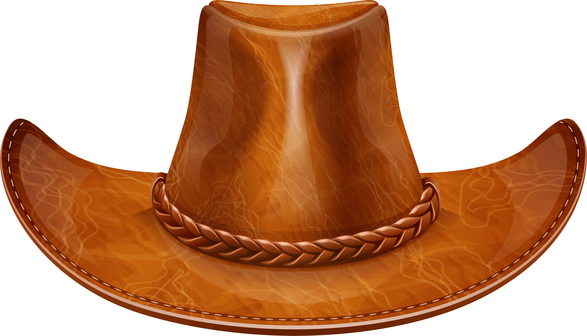
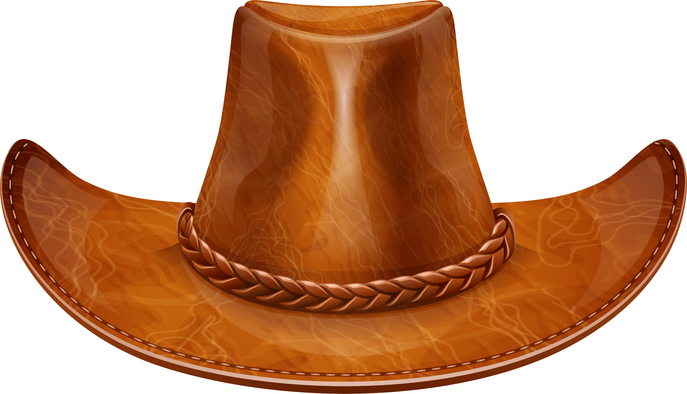

Extenda a animação do gato definida anteriormente de modo que tanto o gato quando seu chapéu façam a mesma órbita em lados diferentes da elipse.Ou faça o chapéu circular ao redor do gato. Você pode ainda alterar a animação de outra maneira que julgar interessante. Para tornar mais fácil a tarefa de posicionar múltiplos objetos, é provavelmente uma boa idéia optar por posicionamento absoluto. Isso significa que as propriedades top e left são contadas relativamente ao topo esquerdo do documento. Para evidar usar coordenadas negativas, você pode simplesmente adicionar um número fixo de pixels para os valores das posições.
 
